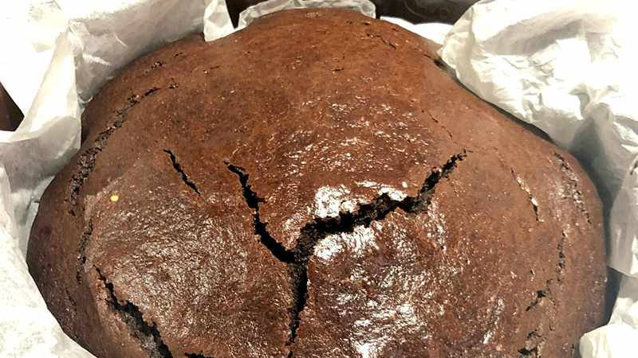

Home
TORTA FIT

Descrizione
Torta integrale e proteica
ideale per chi vuole mangiare senza sensi di colpa
Ingredienti
- 2 uova
- 100 g olio di semi di girasole
- 140 g zucchero semolato
- 60g cacao amaro
- 210g latte
- 1 bustina vanillina
- 200g farina integrale
- 1 bustina lievito per dolci
Procedimento
- Mettere nel boccale le uova, il latte, l'olio e la vanillina
- Aggiungere lo zucchero, la farina, il cacao e il lievito
- Versare il composto nello stampo, rivestito con carta forno
- Infornare in forno preriscaldato statico a 180° per 30 minuti ca.